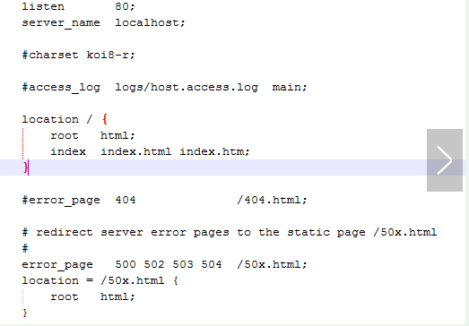

相信很多人都听过nginx，这个小巧的东西慢慢地在吞食apache和IIS的份额。那究竟它有什么作用呢？可能很多人未必了解。
说到反向代理，可能很多人都听说，但具体什么是反向代理，很多人估计就不清楚了。摘一段百度百科上的描述：
这里讲得很直白。反向代理方式实际上就是一台负责转发的代理服务器，貌似充当了真正服务器的功能，但实际上并不是，代理服务器只是充当了转发的作用，并且从真正的服务器那里取得返回的数据。这样说，其实nginx完成的就是这样的工作。我们让nginx监听一个端口，譬如80端口，但实际上我们转发给在8080端口的tomcat，由它来处理真正的请求，当请求完成后，tomcat返回，但数据此时没直接返回，而是直接给nginx，由nginx进行返回，这里，我们会以为是nginx进行了处理，但实际上进行处理的是tomcat。
说到上面的方式，也许很多人又会想起来，这样可以把静态文件交由nginx来进行处理。对，很多用到nginx的地方都是作为静态伺服器，这样可以方便缓存那些静态文件，比如CSS，JS，html，htm等文件。
闲话就不多说了，我们直接来看看nginx怎么使用。
1）要用到的软件当然要下载啦。到nginx官网下一个。http://nginx.org/en/download.html可以到这里去下。我现在用的版本是1.1.7，但基本上以后的版本都兼容，而且我们用到的并不涉及到太底层的，应该不会有什么变化。
这里，由于我的是windows，当然下windows版啦。下完后首先要启动吧。进入到nginx文件夹，直接start nginx就OK了。
比如我下载后放在D:\software\developerTools\server\nginx-1.1.7，直接cmd后cd D:\software\developerTools\server\nginx-1.1.7，有些不习惯命令行的可能会奇怪，它没有进行到那个文件夹。windows并不会在分区间跳转，除非你自己指定了。所以我们要直接d:如下：
此时我们打开任务管理器，可以看到两个nginx.exe在那里好好的。这说明我们已经启动了，至于为什么两个，我们这里不深究。
此时我们打开任务管理器，可以看到两个nginx.exe进程在那里好好的。这说明我们已经启动了，至于为什么两个，我们这里不深究。
现在，我们已经启动了nginx，这时就可以启动tomcat，想着直接访问http://localhost就可以直接访问tomcat了。
先不急，我们来看看启动后的nginx是怎样的。直接访问http://localhost可以看到：
我们可以看到nginx启动成功，现在访问是直接进到nginx的目录里面了。
那么这些实际上是在哪里配置的。这就涉及到nginx的一个重要配置文件nginx.conf了。
2）我们可以看到nginx文件夹内有一个conf文件夹，其中有好几个文件，其他先不管，我们打开nginx.conf，可以看到一段

这段代码在server里面，相当于一个代理服务器，当然可以配置多个。
下面我们仔细来分析一下：
listen：表示当前的代理服务器监听的端口，默认的是监听80端口。注意，如果我们配置了多个server，这个listen要配置不一样，不然就不能确定转到哪里去了。
server_name：表示监听到之后需要转到哪里去，这时我们直接转到本地，这时是直接到nginx文件夹内。
location：表示匹配的路径，这时配置了/表示所有请求都被匹配到这里
root：里面配置了root这时表示当匹配这个请求的路径时，将会在这个文件夹内寻找相应的文件，这里对我们之后的静态文件伺服很有用。
index：当没有指定主页时，默认会选择这个指定的文件，它可以有多个，并按顺序来加载，如果第一个不存在，则找第二个，依此类推。
下面的error_page是代表错误的页面，这里我们暂时不用，先不管它。
那我们知道了具体的配置了，怎么让它访问localhost时转到tomcat时。实际上就修改两个地方：
1 server_name localhost:8080;
2
3 location / {
4 proxy_pass http://localhost:8080
5 } 我们就修改了上面两个地方，我的tomcat在8080端口，可以根据自己的需要修改。这里有一个新元素proxy_pass，它表示代理路径，相当于转发，而不像之前说的root必须指定一个文件夹。
此时我们修改了文件，是不是就意思着必须先关了nginx再重新启动了，其实不必，nginx可以重新加载文件的。
我们直接运行：
高兴得太早了，我们发现有一个错误：
什么来的，45行发现错误，不希望在那一行找到}，于是我们仔细找，发现我们加入的proxy_pass很奇怪，没有;号结尾，这就是问题了，直接修改，然后再运行一下，发现没错误，OK了。
如果不想直接加载，而只是想看看自己的配置文件有没有问题，可以直接输入:
这可以检查配置文件中是否有错。 下面我们所有的修改都假设我们修改完成后运行了nginx -s reload进行重新加载配置文件，请注意。
一切没问题了，然后我们再重新打开http://localhost，我们看到下面的页面：
这时，我们发现它并不是刚才的welcome页面了，而是tomcat的管理页面了，不管我们点击什么链接都是没问题的，相当于直接访问http://localhost:8080一样。
3）上面我们直接试了一个小例子，让nginx进行转发，即所谓的反向代理。但实际上我们的需求不会是这样的，我们需要分文件类型来进行过滤，比如jsp直接给tomcat处理，因为nginx并不是servlet容器，没办法处理JSP，而html,js,css这些不需要处理的，直接给nginx进行缓存。
下面我们来进行一下配置，让JSP页面直接给tomcat，而html,png等一些图片和JS等直接给nginx进行缓存。
这时最主要用的还是location这个元素，并且涉及到一部分正则，但不难：
1 location ~ \.jsp$ {
2 proxy_pass http://localhost:8080;
3 }
4
5 location ~ \.(html|js|css|png|gif)$ {
6 root D:/software/developerTools/server/apache-tomcat-7.0.8/webapps/ROOT;
7 } 我们先要去掉之前配的location /，避免全部请求被拦截了。
然后我们再来看看http://localhost
当我们不指定jsp页面的时候，它会出现找不到，因为，此时并没有相应的location匹配，所以就会有404错误，这时就跳到了nginx自定义的error页面去了。
而当我们用http://localhost/index.jsp去访问时，我们看到了熟悉的页面：
而且图片那些都显示正常，因为图片是png的，所以直接在tomcat/webapps/ROOT目录下直接查找，当然，如果我们点击Manager Application HOW-TO这个链接，我们发现：
它还是找不到，为什么呢？因为这是个html页面，但它并不在ROOT目录下，而是在docs目录下，但当我们匹配html时，我们却到ROOT目录下去找，所以还是找不到这个页面。
一般情况下，如果我们需要用nginx来进行静态文件伺服，一般都会把所有静态文件，html,htm,js,css等都放在同一个文件夹下，这样就不会有tomcat这样的情况了，因为tomcat下的是属于不同的项目，这个我们就没办法了。
3）有些人会说，这些都只会找一台服务器，但如果我们想在一台服务器挂了的时候，自动去找另外一台，这怎么办？这实际上nginx都考虑到了。
这时，我们之前用的proxy_pass就有大用途了。
我们把之前的第一个例子，即全部都代理的修改一下：
最后修改如下：
1 upstream local_tomcat {
2 server localhost:8080;
3 }
4
5 server{
6 location / {
7 proxy_pass http://local_tomcat;
8 }
9 #......其他省略
10 } 我们在server外添加了一个upstream，而直接在proxy_pass里面直接用http://+upstream的名称来使用。
我们还是直接来http://localhost，还是和第一个一样的效果，所有链接都没问题，说明我们配置正确。
upstream中的server元素必须要注意，不能加http://，但proxy_pass中必须加。
我们刚才说可以在一个服务器挂了的情况下连到另外一个，那怎么弄呢？
其实很简单，在upstream中的local_tomcat中配置多一个server。比如我现在弄多一个jetty，端口在9999，所以我们配置如下：
1 upstream local_tomcat {
2 server localhost:8080;
3 server localhost:9999;
4 } 此时，我们关闭tomcat，而只开jetty。我们来运行http://localhost看看效果：
我们看到它请求到了jetty的页面，但由于jetty的机制，这时没有显示jetty主页，这个我们先不管。但我们的在一个服务器挂的情况下自动使用另外一个的功能实现了。
但有时我们就不想它挂的时候访问另外一个，而只是希望一个服务器访问的机会比另外一个大，这个可以在server最后加上一个weight=数字来指定，数字越大，表明请求到的机会越大。
1 upstream local_tomcat {
2 server localhost:8080 weight=1;
3 server localhost:9999 weight=5;
4 } 这时我们给了jetty一个更高的权值，让它更有机会访问到，实际上当我们刷新http://localhost访问的时候发现jetty访问机率大很多，tomcat几乎没机会访问，一般情况下，如果我们必须这样用，不要相关太大，以免一个服务器负载太大。
当然,server还有一些其他的元素，比如down表示暂时不用到该服务器等等。这些可以参考nginx的wiki。也许写了一大堆，有人会有问题，那nginx怎么关闭呢？这倒是个问题，其实直接运行nginx -s stop就可以关闭了。
基本上nginx的用法是这样，深入的以后我们如果用到再学习!